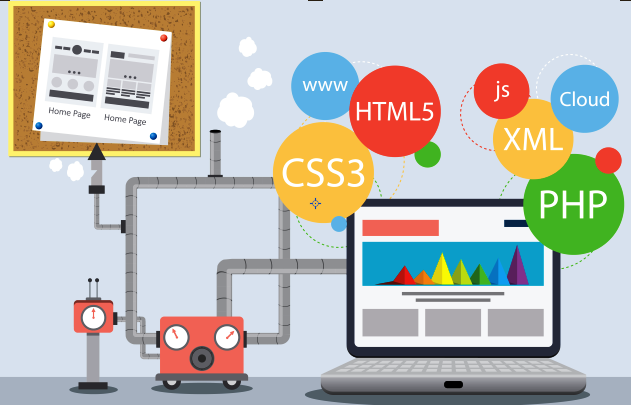

|  | ||
|---|---|---|
Home courses Contact Us |
||
HTML:hyper text mark up language HTML is a computer language devised to allow websites creation. these websites can then be viewed by anyone else connected to the internet.It is relatively easy to learn.with the basics being accessible to most people in one writing.and quite powerful in what it allows you to create.It is constantly undergoing revision and evolution to meet the demands and requirements of the growinginternet audience under the direction of the W3C.the charged with designingand maintaining the language. |
CSS:Cascading style sheet cascading style sheets or CSS are a way to change the look of HTML web pages. CSS was designed by the W3Cand is supported well by most modern web browsers.The current version of CSS is CSS3.CSS3 is available but is split into parts .one advantage to using CSS is a web page can still be displayed and understood even if the CSS is | JS:java script is a high level interpreted programming language for computers. it is often open in web browserapplications to create things that work by themselves like a popup message or a live clock.it is not related to the programming language JAVA.although JAVA and JAVA SCRIPT have many external similarities such as name and syntax. the two languages follow different design principles. |